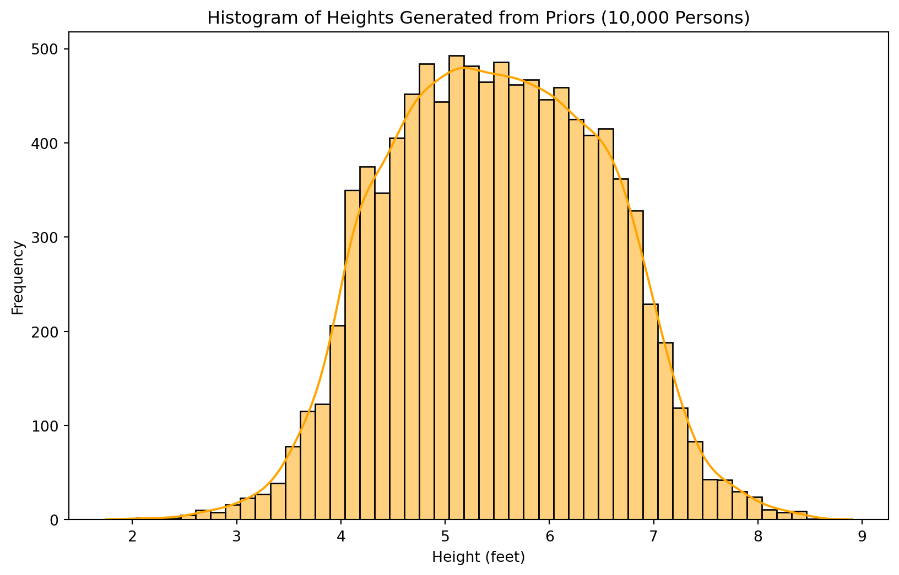
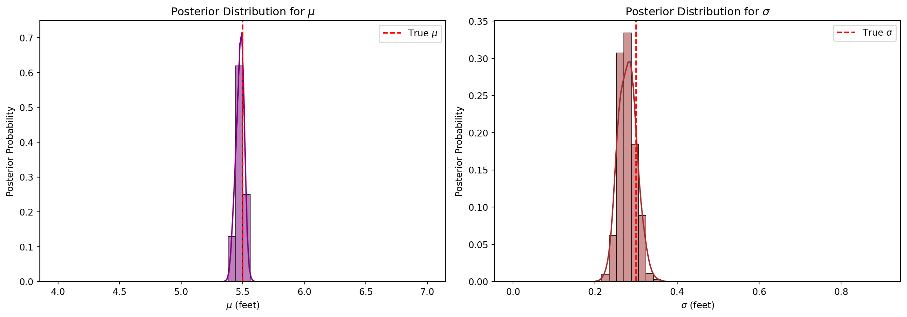

We use the term naive to distinguish this method from more advanced Monte Carlo methods. The advantage here will be simplicity, but it will not be a good solution with many parameters (due to the spareseness of high dimensional space), or where we do not have good priors.
Note
If you’re wondering why generate data for examples instead of using ‘real’ data sets, it’s because it’s the only way to have certainty in the data generating process. This allows us to see how well we fit the model. Obviously the goal is real data - but unfortunately you’ll probably never know exactly what the data generating process was, and that makes understanding the accuracy of ‘new’ methods very difficult.
Bayesian Methods
For determining the \(P(M|D)\), we will use Bayesian methods. There’s a whole historical debate you could research, but when it comes to most scientific and engineering subjects, you wouldn’t be studying the subject if you didn’t have some prior information, even if you can only describe it as intuition. This prior information is valuable, and it should be included in the model. Priors are also valueable in more bespoke models due to their ability to limit solutions to those known to be plausible…
Allen Downey said it well when he stated in Think Bayes that if don’t have much data you should use Bayesian methods, and when you have lots of data, it dominates the priors so you can still use Bayesian methods… (research the real quote).
Dataset
import numpy as npimport matplotlib.pyplot as pltimport seaborn as snsfrom scipy.stats import norm# Set random seed for reproducibilitynp.random.seed(42)# =========================# Step 1: Generate Data# =========================# True parametersmu_true =5.5# average height in feetsigma_true =0.3# standard deviation in feet# Generate dataset of 100 personsdataset_size =100heights = np.random.normal(loc=mu_true, scale=sigma_true, size=dataset_size)# Plot the generated heightsplt.figure(figsize=(10, 6))sns.histplot(heights, bins=15, kde=True, color='skyblue')plt.title('Histogram of Generated Heights (100 Persons)')plt.xlabel('Height (feet)')plt.ylabel('Frequency')plt.show()
# =========================# Step 3: Sample from Priors# =========================# Number of samplesnum_prior_samples =10000# Sample mu and sigma from their priorsmu_samples = np.random.uniform(mu_prior_min, mu_prior_max, num_prior_samples)sigma_samples = np.random.uniform(sigma_prior_min, sigma_prior_max, num_prior_samples)# To avoid sigma=0, set a minimum sigmasigma_samples[sigma_samples ==0] =1e-6# Generate heights based on sampled mu and sigmaheights_prior = np.random.normal(loc=mu_samples, scale=sigma_samples)# Plot the prior-generated heightsplt.figure(figsize=(10, 6))sns.histplot(heights_prior, bins=50, kde=True, color='orange')plt.title('Histogram of Heights Generated from Priors (10,000 Persons)')plt.xlabel('Height (feet)')plt.ylabel('Frequency')plt.show()

# =========================# Step 4: Naive Monte Carlo (Corrected)# =========================import pandas as pd# Precompute constantsn =len(heights)data = heights# Vectorized computation of log-likelihoods# There's a hell of a lot happening in this one line. For each of the 10,000 random samples# from the prior, it is using each as the loc and scale of a norm dist to find the # likelihood of getting the height data. Then summing the 100 to get a 10,000 lenth arraylog_likelihoods = norm.logpdf(data[:, np.newaxis], loc=mu_samples, scale=sigma_samples).sum(axis=0)# To prevent numerical underflow, we'll work with log-likelihoods# Normalize log-likelihoods by subtracting the maxmax_log_likelihood = np.max(log_likelihoods)normalized_log_likelihood = log_likelihoods - max_log_likelihoodlikelihoods = np.exp(normalized_log_likelihood)# Compute posterior probabilities (unnormalized)# Due to flat priors posterior is just equivalent to the likelihoodsposterior = likelihoods# Normalize the posterior (so it sums to 1)posterior /= np.sum(posterior)# Verify that 'posterior' is one-dimensionalprint(f"Shape of posterior: {posterior.shape}")# Create a DataFrame for easier handlingdf = pd.DataFrame({'mu': mu_samples,'sigma': sigma_samples,'posterior': posterior})# Plot the posterior distributions for mu and sigma using Seabornfig, ax = plt.subplots(1, 2, figsize=(14, 5))# Plot posterior for musns.histplot(data=df, x='mu', weights='posterior', bins=50, kde=True, color='purple', ax=ax[0])ax[0].axvline(mu_true, color='red', linestyle='--', label=r'True $\mu$')ax[0].set_title(r'Posterior Distribution for $\mu$')ax[0].set_xlabel(r'$\mu$ (feet)')ax[0].set_ylabel('Posterior Probability')ax[0].legend()# Plot posterior for sigmasns.histplot(data=df, x='sigma', weights='posterior', bins=50, kde=True, color='brown', ax=ax[1])ax[1].axvline(sigma_true, color='red', linestyle='--', label=r'True $\sigma$')ax[1].set_title(r'Posterior Distribution for $\sigma$')ax[1].set_xlabel(r'$\sigma$ (feet)')ax[1].set_ylabel('Posterior Probability')ax[1].legend()plt.tight_layout()plt.show()
Shape of posterior: (10000,)

# =========================# Step 5: Visualize Parameter Likelihood (Log-Scaled Color)# =========================import matplotlib.pyplot as pltimport numpy as np# Define a small epsilon to avoid log(0)epsilon =1e-10# Compute the logarithm of posterior probabilitieslog_posterior = np.log(posterior + epsilon)# Create the scatter plotplt.figure(figsize=(10, 8))# Scatter plot using log_posterior for color scalingscatter = plt.scatter( mu_samples, sigma_samples, c=log_posterior, # Use log-transformed posterior cmap='viridis', alpha=0.5, s=10)# Add a colorbar with appropriate labelingcbar = plt.colorbar(scatter)cbar.set_label('Log Posterior Probability')# Add reference lines for true parameter values using raw stringsplt.axvline(mu_true, color='red', linestyle='--', label=r'True $\mu$')plt.axhline(sigma_true, color='blue', linestyle='--', label=r'True $\sigma$')# Set plot titles and labels using raw stringsplt.title(r'Posterior Probability of $\mu$ and $\sigma$ (Log Scale)')plt.xlabel(r'$\mu$ (feet)')plt.ylabel(r'$\sigma$ (feet)')# Add legendplt.legend()# Display the plotplt.show()
If you paid attention to the Posterior Probability of \(\mu\) and \(\sigma\) plot, you probabiliy noticed that a lot of the points/space on the chart was consumed by areas of low probability. This was true even though we had few parameters (low dimensions) and good priors. The trick of the more advanced Monte Carlo techniques is how to find the areas of high likelihood and sample them efficiently. These include Hamiltonian Monte Carlo (HMC) and the No-U-Turn Sampler (NUTS). We’ll use em, and thankfully the details are easily researched if you want to know more…